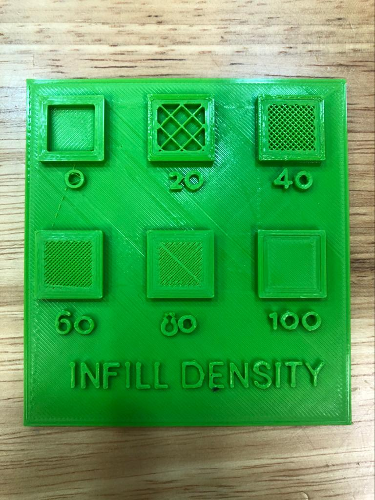
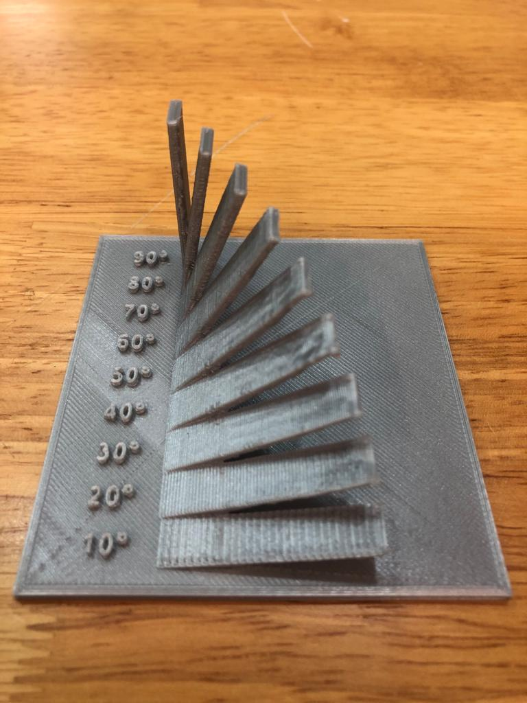

Fused filament fabrication (FFF) printer
Printer slicer: Cura from Ulimaker
After exporting our 3D models from Fusion 360 as .stl format, we load the .stl models
in cura and start slicing into .gcode format for the 3D printer.
Before slicing into .gcode format, we have to take in to account of supprt stucture,
infill, speed, layers of wall and material
My team members
Ye chun - Bridging Test
Fatin - Infill density Sizes
Jia Han - Tolerance Test
Jin Sheng - Overhang Test
We wanted to see how well could the printer connect from one column to another. Therefore yechun had cad out a simple test shown below.

Secondly, to test out the different percentage of infill density of the different sizes. Fatin has to set the individual boxes on her cad.
My part was to test the tolerance by creating a tolerance gauge ranging from 0.1 to 0.5.
The result was 0.3 is the perfect tolerance when designing an item to print.

To test the overhang of the printer. Jin Sheng created a bench mark of overhangs starting from the angle of 90 to 10.
This is the process of printing our base for our fablight project. It took
almost 9 hours to print it out.